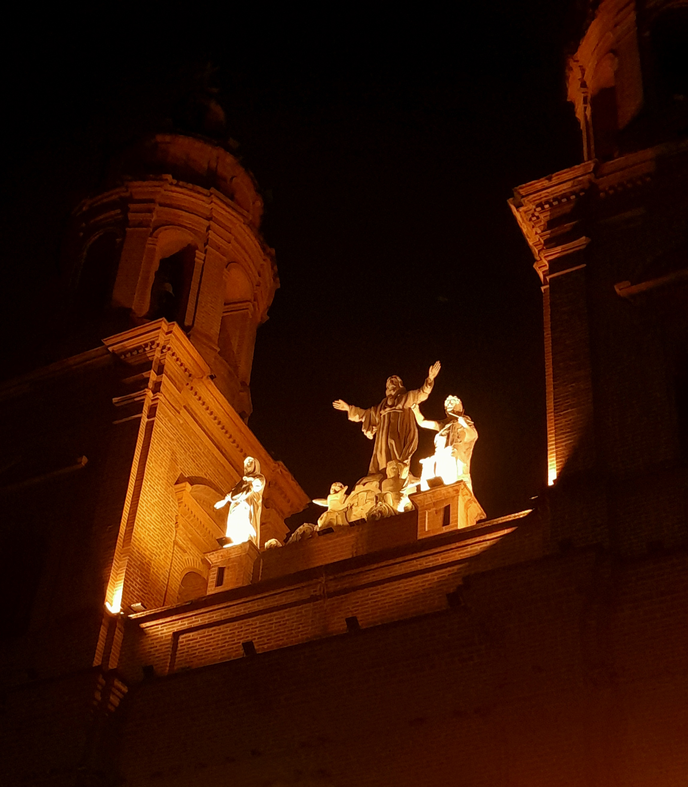

← Volver a la portada
*

¿Qué propósito hay?
Algún día lo sabré…
Algún día; mañana, hoy en esta noche, o quizá en los más absurdos sueños de no ver más la luz.
¿Qué propósito hay en un cuerpo que no posee siquiera su carne,
ni los huesos que la sostienen?
¿Qué propósito ajeno debe poseer para no sentir
que su vida no son los dados al azar
que tira ese ser inhumano?
¿Qué tanto debo poseer ahora
para sentir que vale estar en este compendio de ilusos escenarios?
¿Qué tantas alucinaciones debe tener un ser
que está aprendiendo a palpar los segundos de vida,
vida que pensaba que estaba negada?
Cuánto infortunio atrae,
que hasta los espejismos se diluyen.
Piensa, piensa,
y solo se queda atrapada con los sonidos
que le gustaría explicar.
Siente ese calor que la quema,
la ata y la escupe.
No hay nada en su interior
más que cenizas
y un pequeño frasco
con sus míseras preguntas.
Se ve: no hay lenguaje,
no hay creatividad,
no hay nada que poseer,
nada que su pequeño lenguaje pueda decir…
No hay nada,
ni nadie.
Nadie abre…
Neguentropía

Estuve en un lugar en donde solo fui carne y huesos;
un lugar tangible,
en donde el alma solo se reflejaba en los movimientos corporales,
en donde el ser no era ni escritura ni poesía,
no eran fragmentos.
Todo estaba reducido a lo palpable.
¿Qué ser era?
Ninguno.
Solo materia que se corruga con el tiempo.
Hay cicatrices que no cierran ni bastan.
Soy como la entropía,
pero a la inversa:
soy orden,
soy una neguentropía.
El orden es solo aquello que se tacta.
No basta con un ser caótico,
con un ser que revolotea sin saber mostrarse.
Divago entre el absurdo de mi vida.
Me siento en el clímax del “¿qué soy?”.
No puedo responder que nada,
porque la conciencia me lleva a creer que soy algo.
Aunque cargue esa piedra hasta la cima y me devuelva,
pienso saber y luego caigo,
y así,
interminablemente…
Qué cansancio,
qué hastío,
qué angustia tan bochornosa.
Me avergüenza,
me apena
y me aqueja.
Soy una negrumbre:
no tiene voz
y tampoco la tendrá.
Soy un punto fijo,
pero vacío.
No hay átomo,
no hay materia que cambie ese estado.
Es un estado que vive por inercia,
así como estas palabras pobres,
sembradas sin un razonamiento lógico.
Esto lo escribe un ser que brota,
un ser que ve un camino ontológico
para mostrarse.
Solo signifiqué un cuerpo y sus cualidades.
No hay más que mostrar.
No hay alma
y mucho menos un ser.
2025

Me siento pequeña, vulnerable a todo...
Como puedo sentirme sofocada en mi propia piel,
me estoy ahogando con mi sangre,
me estoy asfixiando con mis venas.
Quiero cortarlas, quiero respirar,
quiero sentir más que el dolor,
quiero sentir la existencia de mi ser,
quiero diluir todo engaño,
quiero destruir la parte que me hace mal,
la parte que me diluye,
quiero ser embestida por una tormenta
y que me arroje en las profundidades de mi cuerpo.
Quiero ser más que un cuerpo enajenado
a la represión de sus inconsistencias,
a su catarsis sombría y aterrada,
quiero ser más que venas que bombean vida,
quiero ser vientre,
vientre ausente de razones y sentidos.
ESTRELLA

La resignación ante tu ausencia
sería un insulto a nuestros recuerdos:
a la nostalgia de tu piel sobre la mía,
a tus ojos riendo,
a mis te quiero
dichos a tu ser.
¿Cómo resignar el corazón
a que tu voz no vuelva a estar cerca,
a que ya no diga
un dulce te quiero?
¿Cómo aceptar
que la comisura de tus labios
no tocará los míos?
¿Cómo se resignan
el anhelo,
el amor,
el deseo?
¿Cómo se despierta
cuando la realidad
ya venía acechando?
No quiero resignarme
a perderte
y anhelarte
solo a través de los recuerdos.
No quiero habitar únicamente en tu memoria;
quiero habitar en tu cercanía,
en tu calor,
en tu ser.
En ti.
título

Dios,
¿existes?
Te escondes donde más duele:
en las preguntas que a veces me atrevo a formular,
en el silencio embriagador que no me atrevo a romper,
en la voz que me exige ser responsable
de mi propia caída.
Te busco sin tocarte.
Te nombro sin creer del todo.
Te necesito como al lenguaje:
para entenderte,
para no enloquecer del todo.